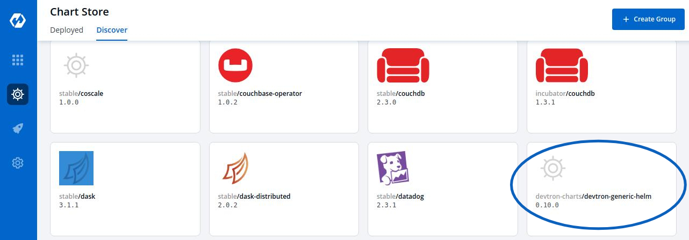
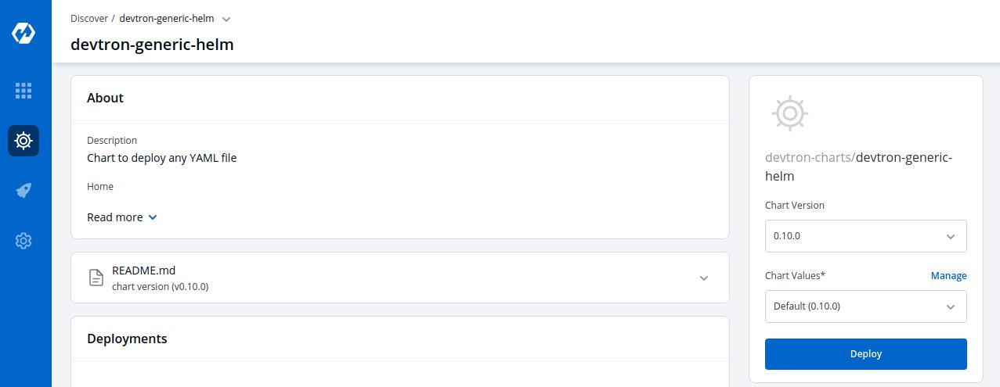
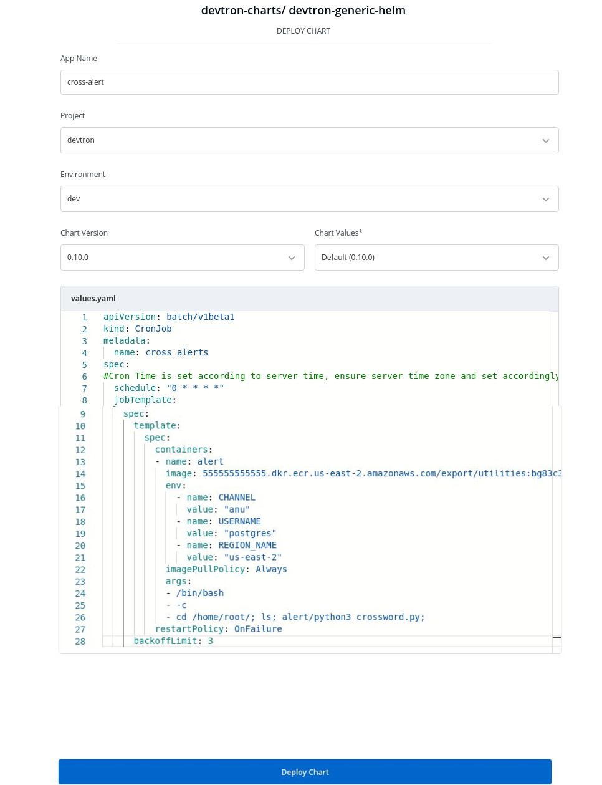

Using Devtron-generic-Helm Chart to run Cron Job or One Time job
You can discover over 200 Charts from the Devtron Chart store to perform different tasks such as to deploy a YAML file.
You can use Devtron-generic-Helm Chart to run the cron jobs or one time job.
Select the Devtron-generic Helm Chart from the Devtron Chart Store.

Select the Chart Version and the Chart Value of the Chart.
And, then Click on Deploy

Configure Devtron-generic-helm chart

Click on Deploy Chart
| Key | Description |
|---|---|
App Name |
Name of the app |
Project |
Name of the Project |
Environment |
Select the Environment in which you want to deploy app |
Chart Version |
Select the Version of the chart |
Chart Values |
Select the Chart Value or Create a Custom Value |
In values.yaml, you can specify the YAML file that schedules the cron job for your application.